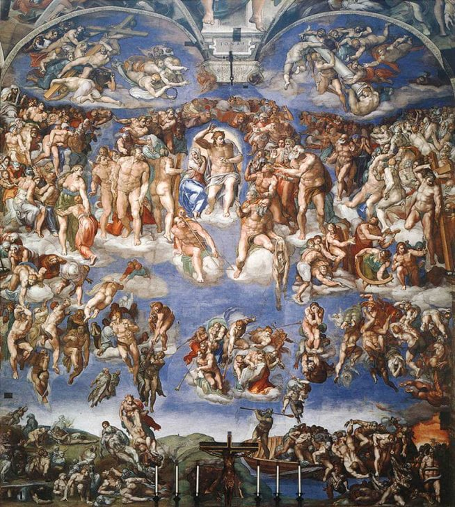
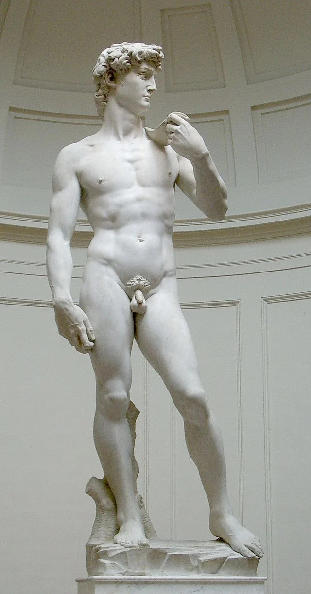
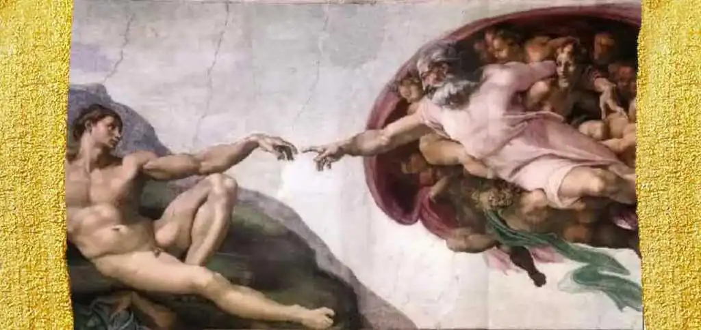
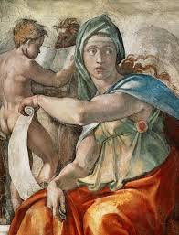
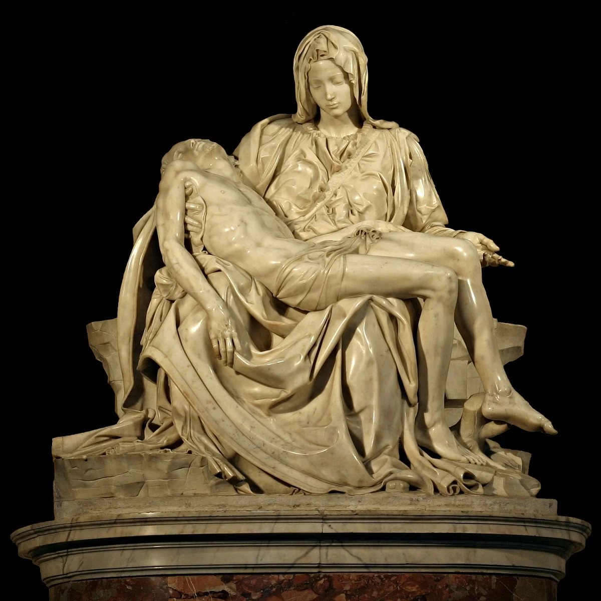
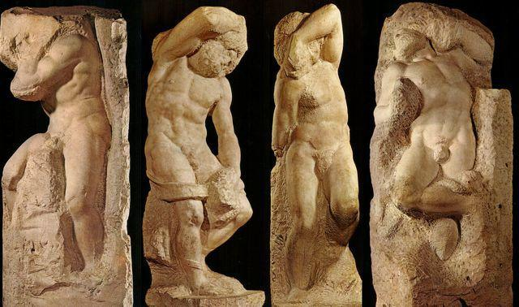

Caravaggio è noto per il suo uso innovativo del chiaroscuro, una tecnica pittorica che enfatizza i contrasti tra luce e ombra, creando un'immediata drammaticità nelle sue opere. Le sue composizioni sono spesso caratterizzate da figure realistiche e intense, immerse in scene di vita quotidiana o dramma religioso. Alcune delle sue opere più famose includono "Bacchino malato", "Giovane con il canestro di frutta", "Il cesto di frutta", "San Matteo e l'angelo" e "La vocazione di san Matteo". Queste opere sono ammirate per la loro maestria tecnica e la loro capacità di catturare l'attenzione dello spettatore attraverso la loro forza emotiva e visiva.